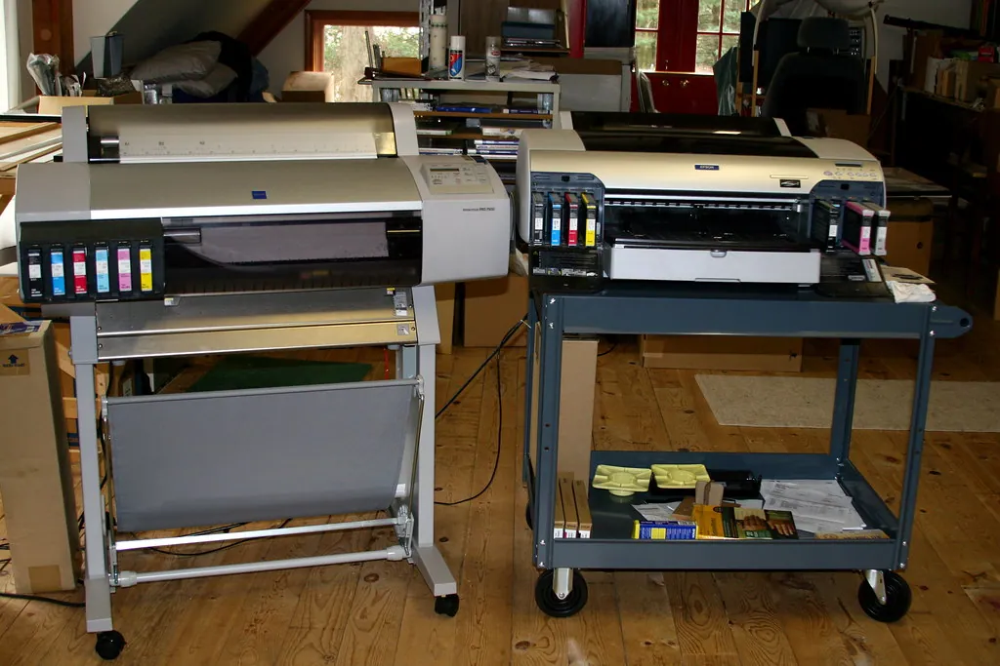

Printer Connections
Printers cause more everyday frustration than almost anything else, yet most troubles have the same handful of calm fixes. Here is how to connect, and how to settle the common problems without stress.

The Steady Mouse is an independent educational website and is not affiliated with, endorsed by, or sponsored by any company mentioned.
How a printer talks to your computer
A printer reaches your computer in one of two ways: over your home Wi-Fi (wireless, no cable) or through a USB cable plugged straight in. Wireless is tidy and lets any device in the house print; a cable is rock-steady and never “loses” the printer. Neither is better; they simply suit different homes.
Why printers seem temperamental — and why it isn't you
If your printer has ever made you feel foolish, take heart: printers frustrate almost everyone, and it is genuinely not a reflection on you. A printer is really two machines in one — a little computer that talks to your Wi-Fi, and a mechanical device that pulls paper and squirts ink — and either half can have an off day. When they disagree, the printer simply stops, often with an unhelpful message or none at all.
The reassuring truth is that these stoppages are almost always temporary and almost always fixed by the same short list of calm steps. A printer that “worked yesterday and won't today” has usually just lost its wireless connection overnight, not broken. A printer that prints faint pages needs its ink cleaned or replaced, not repaired. And a printer that refuses to start often just needs switching off and on, exactly like a computer that has got itself confused.
So the right frame of mind is patience, not alarm. Work through the steps in order, give each one a moment to take effect, and resist the urge to change ten things at once — that only makes it harder to tell what fixed it. Nine times out of ten, the trouble clears within a few minutes, and you will have learned something that makes next time easier. Keep this page bookmarked, and the printer loses its power to spoil an afternoon.
Setting up wireless printing
What you'll need
- A printer that supports Wi-Fi
- Your Wi-Fi network name and password
- A few unhurried minutes
- On the printer's own small screen, open its network or Wi-Fi setup and choose your network from the list.
- Type your Wi-Fi password on the printer, taking care with capital letters.
- On the computer, open Settings, then Bluetooth & devices, then Printers & scanners.
- Click Add device; when your printer appears, click Add beside it.
- Print a test page to confirm the two are talking.
Tip: Keep the printer reasonably close to your router during setup. A strong signal makes the first connection far smoother, and you can move the printer afterwards if it still reaches.
Setting up a cable connection
If you would rather not fuss with Wi-Fi, a cable is wonderfully simple and never drops out.
- Find the printer cable from the box — a flat rectangular end for the computer, a squarer end for the printer.
- Push the square end into the printer and the flat end into any USB socket on the computer.
- Switch the printer on; Windows usually recognizes it within a minute.
- Check it under Settings → Bluetooth & devices → Printers & scanners, then print a test page.
The dreaded “Printer offline” message
“Offline” is the most common printer complaint, and it rarely means anything is broken. It simply means the computer has temporarily lost touch with the printer. Work calmly down this table.
| Step | What to do | Why it helps |
|---|---|---|
| 1 | Check the printer is switched on and not asleep | A sleeping printer looks “offline” to the computer |
| 2 | Turn the printer off, wait ten seconds, turn it on | Clears most temporary faults and rejoins Wi-Fi |
| 3 | Confirm printer and computer are on the same Wi-Fi | They cannot talk across two different networks |
| 4 | In Printers & scanners, open the printer and untick “Use Printer Offline” if shown | Windows sometimes sets this by accident |
| 5 | Restart the computer | A fresh start resolves stubborn cases |
Clearing a paper jam
Safety first: Always turn the printer off before reaching inside, and never force or yank stuck paper — pull it gently in the direction it was travelling so you do not leave torn scraps behind.
- Turn the printer off.
- Open the cover and find the jammed sheet.
- Pull it slowly and evenly in the direction it was feeding.
- Check for any small torn pieces left behind and remove them.
- Close the cover, turn the printer on, and try again.
Printing from your phone or tablet
Once a printer is on your Wi-Fi, your phone can usually print to it too — handy for a boarding pass or a photo without turning the computer on.
- Open the thing you want to print on your phone — a photo, an email, a web page.
- Tap the Share symbol (often a box with an upward arrow) or the three-dot menu.
- Choose Print from the list.
- Pick your printer's name, check the number of copies, and tap Print.
Tip: If your phone cannot find the printer, make sure the phone is on your home Wi-Fi and not using its mobile data. The two must share the same network.
Settings that save ink and paper
Each time you print, a small box of choices appears. Three of them quietly save you money.
- Copies — leave at 1 unless you truly need more.
- Color or black and white — choose black and white for letters and recipes; save color for photos.
- Pages — if you only need page 2 of a long document, type 2 rather than printing it all.
- If your printer offers double-sided (duplex) printing, turning it on halves your paper use.
Caring for your printer
A little kindness keeps a printer reliable for years.
- Use it now and then — printers that sit idle for months are the ones whose ink dries up.
- Keep it out of direct sun and away from dust, with the lid closed when not in use.
- Use paper meant for your printer type (inkjet or laser), stored flat and dry so it does not curl and jam.
- When the printer prompts you, run its built-in cleaning routine — it is designed to keep the print crisp.
Ink, without the mystery
Printers warn you when ink runs low, and faint or streaky printing is the usual sign. You do not need the priciest cartridges, but you do need the ones that match your exact printer model, printed on the front of the machine.
- Run the printer's own “clean” or “align” routine from its screen if print looks streaky — this often revives a cartridge.
- Choose black-and-white (grayscale) for letters and recipes to save colored ink for photos.
- Buy ink as you need it; cartridges can dry out if stored for years.
When it is time to replace a printer
Printers do not last forever, and there comes a point where a new one is wiser than more ink. A fair rule of thumb is this: if a basic printer is several years old and needs a repair, or if a full set of replacement cartridges would cost nearly as much as a new printer, replacement is usually the sensible choice. There is no shame in it; home printers are built to a price and are not meant to be mended like a kettle.
When you do replace one, two small courtesies are worth remembering. First, many retailers and the maker's official website explain how to recycle the old machine responsibly rather than sending it to landfill. Second, before you part with it, if it ever held scanned documents or Wi-Fi details, a factory reset from its own menu wipes those so nothing personal leaves the house. Beyond that, setting up the new one follows exactly the same calm steps as above — and you will find it far less daunting the second time around.
When a printer gives trouble that goes past these simple steps, its maker's official website is the place for warranty and recycling information — type the address yourself to be sure you reach the genuine page. Next, a steady connection underpins all of this: read Home Wi-Fi.